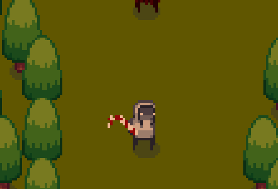
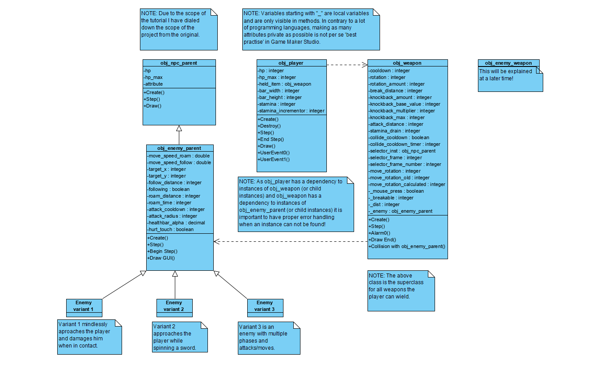
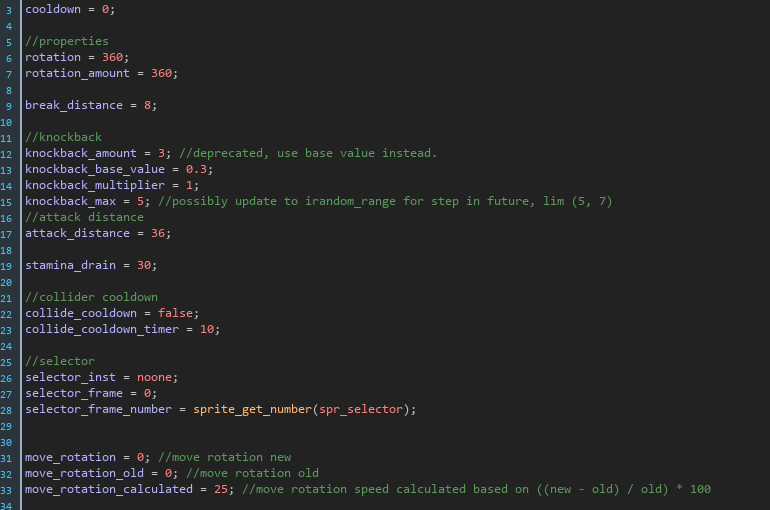
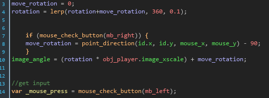
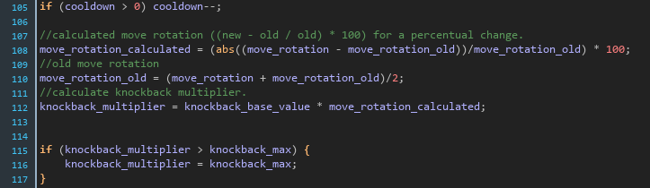
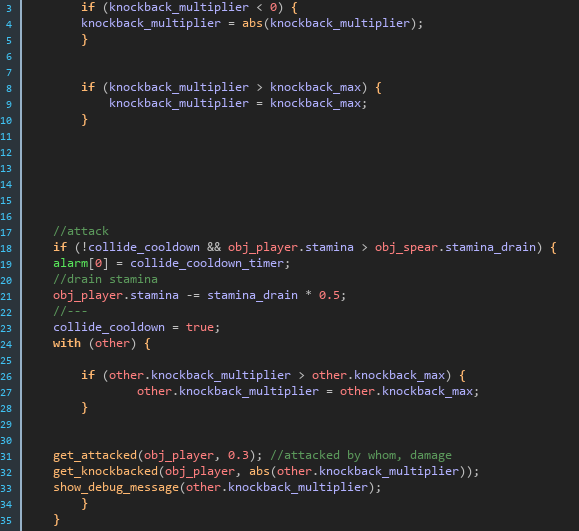
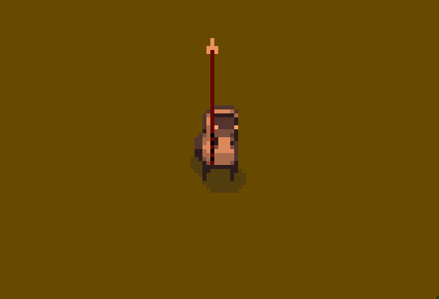

Blog Posts
Creating top-down melee combat in "Game Maker Studio 2" | Part 1
Introduction
This post will provide a rundown on implementing melee combat in a top-down scenario for your projects. I will be using Game Maker Studio 2, though the logic can be applied to almost any program or project. We will take a look at simple enemies and their behaviours, fighting mechanics, health and knockback. Part 1 will focus on the player's spear mechanics and hitting enemies.
An example implementation of melee combat.
Prerequisites
I will use GML (Game Maker Language) to demonstrate the functionality, if you would like to follow along, you could download a trial version of the software from the YoYo Games website. It is worth mentioning that this is not a step by step tutorial or explanation, but rather a brief explanation of a possible solution.
Before we begin there are a few basic fuctionalities and resources that need to be realised. These functionalities are:
- A player character that can walk left, right, up and down.
- An enemy character that follows the player and damages him on touching.
- A basic health system for the player, including a variable for the maximum hp that the player can reach.
- A background in your room so the characters are properly visible (I would recommend a shade of green).
- A sprite for a melee weapon, this can be anything as long as it is at least close to the length of the player character (or more).
- Flip the player character over the x axis as he walks either left or right to represent the correct facing distance.
- Tip: If you have a movement animation you can reverse it when the player walks backwards!
The Application Architecture
In the above image you can view a simple diagram with some classes that we are going to create. Note I will be using snake case in Game Maker, but I encourage you to use whatever you feel comfortable with! Please take a minute to read the notes, also note that this scheme isn't entirely complete, but we will get back to that later!
Let's get cracking!
Enough waiting! Let's begin shall we :)
The player character
Let's start by expanding the player character. If you haven't yet please consider taking a brief look at the prerequisites for following this small guide.
The first thing we are going to do is create a variable in the create event for the player's held item. This will be an instance of a weapon. We will initialize is at 'noone', which is a value that returns -1. This is easy to use for checking if the player has a weapon, if the value is -1/noone, it is basically the same as undefined, although it does not cause any issues when a variable returns noone. As soon as you have designed a weapon you can change this value to the weapon, if you do not intend on having weapon drops or obtaining them you could immediately allocate an instance of the weapon that the player should have equipped. If the player's health is less than zero, make sure to destroy the instance of the weapon along with the player. This can be done with the instance_destroy() function. In the step event you can handle movement for the player.
That is most of the work for the player. It may seem weird but since a lot of values may vary per weapon it is useful to put as much data as possible in the weapon data itself instead of retrieving data from the player, there is no point in overwriting everything again when a different weapon is equipped. A possible alternative would be an array of possible weapons and adding all properties in the player instead of creating a seperate weapon object. Due to the nature of the weapon's visuals I have chosen not to do this because by creating seperate objects for each weapon (in my opinion) it allows me to customize graphics faster and easier.
The player's first weapon
I have decided to create a spear and candy cane as weapons for the player. I will discuss how I created the spear in this section.
In the above image you see the code in the create event/method for the player. You could compare this with a constructor, however getters and setters are not required in Game Maker Studio.
The first thing that executes in the step event is a bit of code that checks whether the player is pressing the right mouse button. If he is, the image angle of the spear sprite will rotate towards the mouse. Because the origin of my spear is at the bottom of the spear it always rotates the tip of the spear towards the mouse. The move_rotation variable is set to equal the rotation of the spear relative to the mouse coordinates. This can be done with "move_direction = point_direction(id.x, id.y, mouse_x, mouse_y)" where id refers to the current instance (obj_spear) and mouse refers to the coordinates of the mouse on the application surface.
The spear has 2 different functionalities. The player can attack an enemy using the left mouse button, which will provide a high damage sweep. Alternatively, the player can point his spear in the direction of enemies, on contact the enemies will take a low amount of damage and be knockbacked depending on the speed that the player moved his mouse in the direction of the enemy.
The next thing we can do is check if the player is clicking at an enemy. We can check this by retrieving any objects under the coordinates of the mouse. We can do this using the instance_position() function. It takes 3 arguments: x, y and the object. In our case these are mouse_x, mouse_y and obj_enemy_parent. If we find any instance of which obj_enemy_parent is a parent we know that there is an enemy. So make sure to allocate the returned value from the above function to a local variable (hint: this is _enemy as seen from the application architecture UML scheme). Once we have our enemy we can simply obtain the distance of the enemy to the player using the distance_to_object function. Then we can check whether the distance is less than the spear's attack range. If so we could set a selector id (which could be a cool sprite to indicate we have range on the enemy).
If the player clicks, we can check if the cooldown is equal to 0, the mouse is pressed and in my case whether the player's stamina is greater than the weapon's stamina drain. If so, we can apply a rotation to the weapon, apply a cooldown and remove the player's stamina by the stamina drain of the spear. Then you can simply damage your enemy by reducing it's hp.
We are not quite there yet, you may have read something about a rotation but this rotation doesn't do anything right now. We are going to use linear interpolation to create an animation and return it to it's original position after sweeping. In the beginning of the step event add: "rotation = lerp(rotation+move_rotation, 360, 0.1);". This will interpolate the total rotation of the player's weapon along with the direction the player is aiming in with his mouse. The second argument is the rotation_amount which indicates how many degrees the sweep or spear strike will be. If you want to make it interesting you could add a random value here. For example: "irandom_range(200, 360)" for a value between the specified inputs. The last argument is set to 0.1 which is the amount to interpolate per step. The benefit of using lerp in this situation is that it will create a smooth animation, if the amount of degrees that have been rotated is still small the weapon will rotate very fast, but if it is close to the desires amount, it will rotate a lot slower and thus create a smooth transition from combat to idle.
A small snippet of the lerp code. (in the step event)
The code displayed above in the snippet is also a part of the step event. If the cooldown is larger than 0, we reduce it by 1 every step. After this we calculate the move_rotation_calculated which is the percentual change of the current move rotation compared to the old move rotation. The larger the percentage, the more knockback we can apply. The higher the percentage, the faster the player's strike. After this the old move rotation is adjusted to equal the current move_rotation and the old_move_rotation divided by 2. After which we can define the knockback_multiplier as the knockback_base_value multiplied by the calculated move rotation (move_rotation_calculated). After this we check if the multiplier is greater than the maximum value, if it is we correct it.
To finalize, we can add a collision event with instances of obj_enemy_parent.
The above code is the collision event in the spear with the obj_enemy_parent (or children). We check if the knockback_multiplier is less than 0, if it is we ensure it is a positive value (using abs). Next we check if the knockback that is calculated is greater than the maximum knockback, if it is we limit it to the maximum value. Note that there is an alarm[0] event which will set collide_cooldown to false after collide_cooldown_timer has passed. This is to prevent the player from being able to spam his attacks. Next we simply check if the conditions are met, apply a cooldown, reduce the stamina by half the main action drain, add a bit of damage to the player (I do this using a script to add knockback) and finally apply knockback using the get_knockbacked() script/custom function. I will explain how to create this later! Implementing all this functionality could result in something like this (enemy functionality will be covered later):
Wrapping up
That's it for part 1! I will try to publish part 2 as soon as I finish it!
Contact Me
vincent@pcs.nl
Zuid-Holland, The Netherlands
0612079076